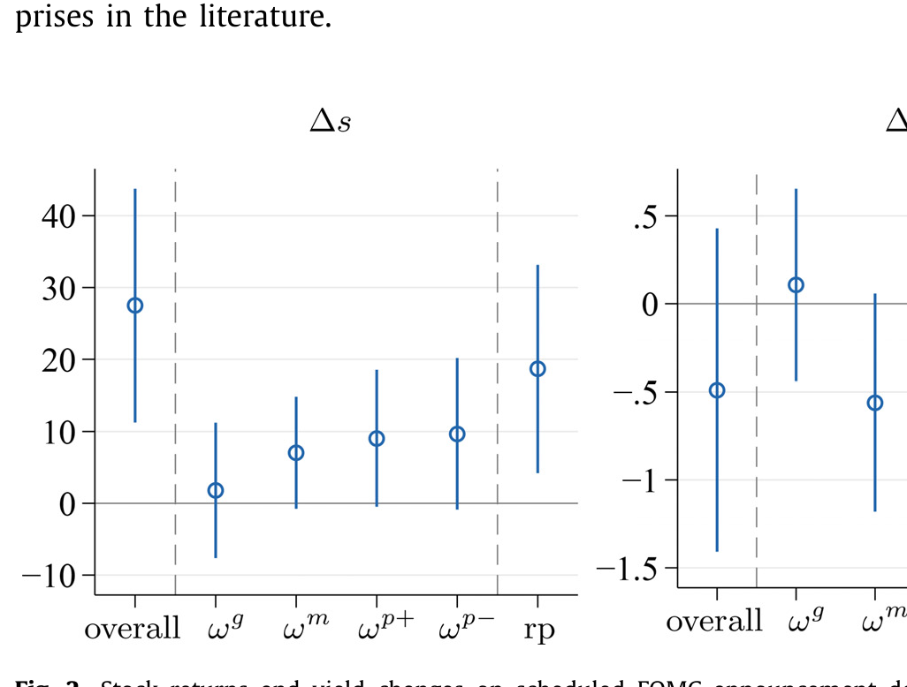
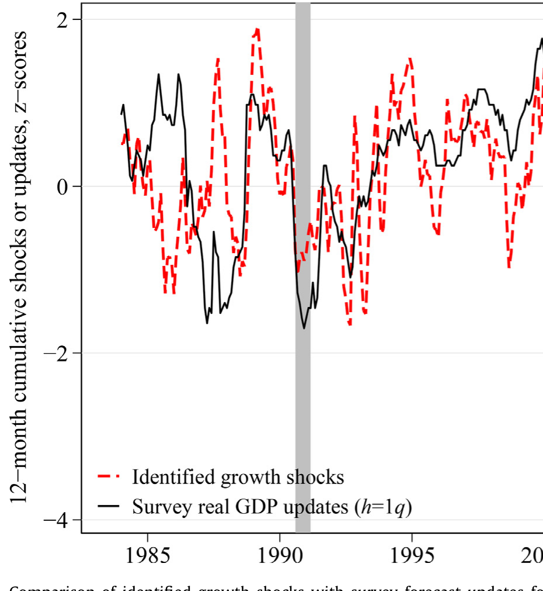
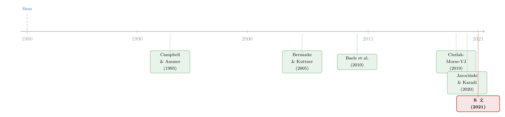

股和债，到底在听同一个人说话吗？
本文读的是 Cieslak & Pang (2021, Journal of Financial Economics)：作者只用「每日的股票收益」和「各期限国债收益率变化」这两样市场数据，借助符号约束 (sign restrictions) 的结构 VAR，把驱动股债的力量拆成四个相互正交的冲击——增长、货币，以及两个性质迥异的风险溢价冲击（common premium 与 hedging premium）。靠着这把尺子，他们解开了一个老谜题：为什么 FOMC 公告日股票平均多涨约 30 bps，长债却纹丝不动。
1 一个让人别扭的事实
先看一组数字。从 1994 到 2017 年，美联储公开市场委员会 (Federal Open Market Committee, FOMC) 开会公布利率决议的那些天，美国股市的平均收盘收益率，比其它所有交易日要高出将近 30 bps。这是一笔大钱：一年八次会议，光是这八天就贡献了股票超额收益的相当一部分。这个现象本身并不新鲜，Lucca 与 Moench (2015) 早就记录过。
可真正别扭的地方在债券这一边。按照我们对货币政策最朴素的理解：美联储在 FOMC 日释放的若是宽松信号，那它压低的是利率——股票该涨，债券价格也该涨（收益率该跌）。股债同向，故事很顺。
但数据偏偏不配合：同样这些 FOMC 日，十年期国债的平均收益几乎没有任何显著变化。
于是问题就尖锐起来了：如果 FOMC 日的高股票收益真的来自「降息」这条贴现率通道，长债为什么不跟着一起涨？反过来，如果那不是降息，又是什么力量能让股票系统性地上涨、却对长债无动于衷？

Figure 2: Stock returns and yield changes on scheduled FOMC announcement
这篇论文的全部野心，可以浓缩成一句话：它要把「驱动股票的力量」和「驱动债券的力量」拆开来分别称重，看清股和债在 FOMC 日究竟是不是在听同一个人说话。
2 老办法为什么不够用
要回答这个问题，传统做法是「事件时点识别」(event-study / event-timing)：既然美联储只在 FOMC 日开会，那就假设这一天资产价格的异动只反映货币政策新闻，于是把当天的短端利率期货变化（如 Kuttner, 2001；Bernanke & Kuttner, 2005；Gürkaynak et al., 2005）直接当作「货币政策冲击」。
接着，一个自然的问题是：这个假设站得住吗？作者指出它有两道硬伤。
第一，货币新闻并不只在 FOMC 日才出现——非农就业数据、美联储官员讲话，都可能传递政策信息。把货币冲击「锁」在 FOMC 日，会漏掉一大块。
第二，也是更致命的一点：美联储在 FOMC 日说的话，远不止「我对短期利率的偏好」这一件事。它的沟通还会让投资者更新对经济状态的判断（这就是所谓的「美联储信息效应」, Fed information effect），甚至更新对不确定性、对风险补偿的看法。换句话说，一个看似干净的「货币政策意外」，其实是好几种经济上完全不同的冲击搅在一起的混合物。作者后面会明确证明：用事件时点法得到的货币意外（如 Gürkaynak et al., 2005），恰恰是他们识别出的几个冲击的线性组合。
所以，与其依赖「这一天只有货币新闻」这种脆弱假设，不如换一个思路：从资产价格本身,用一套在任何一天都成立的、由理论驱动的经济约束,把新闻一层层剥出来。 这就引出了本文的识别策略。
3 识别策略：用两把尺子，量出四个冲击
3.1 把资产定价模型翻译成一个结构 VAR
作者的出发点，是大量仿射 (affine) 资产定价模型共有的一个结构：资产价格（债券收益率、对数股息价格比）是状态变量的线性函数。记 \(Y_t\) 为资产价格向量，\(F_t\) 为状态变量向量，则
$$Y_t = a + A F_t \tag{1}$$
而 \(Y_t\) 本身服从一个简约式 (reduced-form) 的向量自回归 (vector autoregression, VAR)：
$$Y_t = \mu_Y + \Phi(L)\,Y_t + u_t \tag{2}$$
把 (1) 代入 (2)，状态变量也服从一个 VAR：
$$F_t = \mu_F + \Gamma(L)\,F_t + \nu_t, \qquad \nu_t = \Sigma_F\,\omega_t \tag{3}$$
这里 \(\Sigma_F\) 是对角矩阵，\(\omega_t\) 是单位方差、相互正交的结构冲击。资产价格的简约式创新 \(u_t = Y_t - E_{t-1}(Y_t)\) 与结构冲击之间，由一个矩阵 \(\tilde A\) 连接：
$$u_t = \tilde A\,\omega_t, \qquad \tilde A = A\,\Sigma_F \tag{4}$$
\(u_t\) 很好估——它就是简约式 VAR 的残差，而且因为资产价格是高频可得的，\(u_t\) 也是高频的。难点全在 \(\tilde A\)：状态变量（投资者的信念、风险溢价）本身看不见，要从 \(u_t\) 反推出正交的 \(\omega_t\)，必须给 \(\tilde A\) 加上额外的约束。
值得强调的是，作者借用了结构 VAR 文献（Sims, 1980 开创，Faust, 1998；Arias et al., 2019 等发展）里「结构冲击」的概念——它们是模型中外生的、互不相关的原始风险源（比如习惯模型里的风险厌恶冲击、长期风险模型里的波动率冲击）。这与 Campbell & Ammer (1993) 那套「把资产收益拆成现金流新闻与贴现率新闻」的会计恒等式不同：后者并不产生正交的冲击，因此现金流新闻和贴现率新闻的解读会有歧义。本文要的，是正交的、有清晰经济身份的四个冲击。
关键不是「写出一个完整的模型」，而是「找到一组几乎所有主流模型都同意的、关于符号方向的弱约束」。这正是符号约束的妙处：它只对 \(\tilde A\) 的正负号下手，得到的是一个识别集合（set identification）而非一个点，代价更小、对模型误设更稳健。
3.2 第一把尺子：跨期限约束
第一把尺子，作者称为「跨期限约束」(cross-maturity restrictions)，用来把短端利率预期类的冲击和风险溢价类的冲击分开。它的根基是一个最基本的收益率曲线恒等式：\(n\) 期对数名义收益率，等于未来短端利率的平均预期（预期假说项, EH term）加上债券风险溢价（期限溢价项, term premium）：
为什么这能分开冲击？作者用一个两状态变量的仿射例子讲得很透：设短端利率因子 \(i_t\)（满足 \(y_t^{(1)}=i_t\)）和市场风险价格因子 \(x_t\) 各自服从持续性为 \(\varphi_i\)、\(\varphi_x\) 的 AR(1) 过程，\(i_t\) 决定 EH 项，\(x_t\) 决定期限溢价项。那么短端利率冲击对 \(n\) 期收益率 EH 项的影响载荷是
$$\frac{1}{n}\,\frac{1-\varphi_i^{\,n}}{1-\varphi_i}\,i_t$$
只要 \(|\varphi_i|<1\)（短端利率平稳、终会均值回复），这个载荷就是随 \(n\) 递减的——一个今天的短端利率冲击，对两年期收益率的冲击远大于对十年期的冲击。直觉很简单：均值回复意味着「现在的偏离」会被未来慢慢抹平，期限越长，被平均掉的越多。
反过来，风险溢价冲击主要作用在期限溢价项上，而期限溢价是逐期累加的，期限越长累加得越多，所以风险溢价冲击的影响随 \(n\) 递增。
一句话记住这把尺子：短端利率预期类的冲击（增长、货币）随期限衰减，风险溢价类的冲击随期限放大。 于是，比较收益率曲线上不同期限的相对反应强度，就能把这两类力量剥离开。
3.3 第二把尺子：股债联动约束
跨期限约束把冲击分成了「短端利率预期」和「风险溢价」两大类。但每一类内部还各有两个成员，需要第二把尺子——「股票收益与收益率变化的联动方向」——来进一步细分。
- 把短端利率预期类拆成增长新闻 \(\omega_g\) 与货币新闻 \(\omega_m\)：好的增长新闻同时抬高股价和收益率（现金流预期上升，股债同向）；好的货币新闻（宽松）抬高股价、却压低收益率（纯贴现率冲击，股债反向）。
- 把风险溢价类拆成 common premium \(\omega_{p+}\) 与 hedging premium \(\omega_{p-}\)：正的 common premium 新闻同时抬高股票和债券的风险溢价（两者都暴露于纯贴现率风险），于是压低股价、同时压低债券价格（推高收益率）；正的 hedging premium 新闻则抬高股票风险溢价、却降低债券风险溢价——因为债券此时为股票的现金流风险提供了对冲，于是压低股价、但抬高债券价格（压低收益率）。
注意这里的精巧之处：两种风险溢价冲击对股票的作用方向相同（正的溢价冲击都压低股价），但对债券的作用方向相反。这正是后面解开 FOMC 谜题的钥匙。把四个冲击的符号约束并排放在一起：
| 冲击 \(\omega\) | 短端收益率 | 长端收益率 | 股票 | 跨期限 | 股—债收益率联动 |
|---|---|---|---|---|---|
| 增长 \(\omega_g\)（好） | + | + | + | 衰减 | 同向 |
| 货币 \(\omega_m\)（宽松） | − | − | + | 衰减 | 反向 |
| common premium \(\omega_{p+}\)（升） | + | + | − | 放大 | 反向 |
| hedging premium \(\omega_{p-}\)（升） | − | − | − | 放大 | 同向 |
四个冲击，靠「跨期限衰减/放大」与「股债同向/反向」两个维度的不同组合，被唯一地区分开来。整套识别的美妙在于：它不需要设定随机贴现因子的具体形式，也不需要估计状态变量的动态，只用了几乎所有主流宏观金融模型都会同意的符号方向。
4 数据
作者用的资产价格非常「公开」：股票端是 CRSP 的市场组合日收益，债券端是 Gürkaynak, Sack & Wright (2006) 构造的、覆盖多个期限（如 1、2、3、5、7、10 年）的美国国债零息收益率曲线。样本从 1980 年代初一直延伸到 2017 年——能回溯这么久、做到日频，正是「只用资产价格、不靠看不见的状态变量」这一路线的最大红利。FOMC 日、非农就业 (non-farm payroll) 公布日等事件日期，则用来做应用分析。
5 主要结果：谜题是怎么解开的
5.1 FOMC 日：股票的涨，七成来自风险溢价
把识别出的四个冲击代入 FOMC 日，谜题豁然开朗。1994–2017 年间那将近 30 bps 的 FOMC 日股票超额收益里：
- 风险溢价冲击贡献了约 70%——也就是说，FOMC 日股票上涨的主因，是美联储的沟通同时压低了 common premium 和 hedging premium（两类风险补偿一起下降，抬高股价）；
- 货币宽松冲击（短端利率通道）再贡献约 25%；
- 增长新闻贡献剩下的一小部分。
那债券呢？逐个冲击看，它们对长债并非没有影响，而是互相抵消了：common premium 的下降让十年期国债的 FOMC 日收益提高约 8 bps，货币宽松又添 3 bps；可这些涨幅，几乎被 hedging premium 下降带来的债券贬值全部吃掉。一加一减，长债的整体反应在经济上很小、统计上不显著——于是表面上「债券毫无反应」，实则是两股力量在水面下打了个平手。
这就是全文最漂亮的一击：「债券没反应」不是因为什么都没发生，而是因为两个性质相反的风险溢价冲击恰好抵消。 用单一风险溢价因子的模型永远看不到这一层，必须有「两个」风险溢价冲击、且允许股债对它们有不同的暴露，才能把账算平。
这个结论与 Cieslak, Morse & Vissing-Jorgensen (2019, CMVJ) 关于 FOMC 周期的发现一脉相承。作者进一步在 FOMC 周期时间里发现：虽然「偶数周」确实伴随更多的政策宽松新闻，但风险溢价冲击的影响力约是短端利率货币冲击的 3.5 倍。换句话说，美联储真正搅动股市的，更多是它对风险补偿的影响，而不只是它对短期利率的那点调整。（关于把「这一次会议」的风险溢价单独解出来的努力，可参见《把「这一次会议」的恐惧，从期权价格里解出来》。）
5.2 非农数据：为什么「坏消息」常是股市的好消息
作者把同一把尺子对准非农就业公布日，又解释了一个老观察（Boyd et al., 2005）：为什么经济好的时候，糟糕的就业数据反而常让股市上涨？
答案是：同一个数字，在不同的经济状态里被读成了不同的冲击。 在衰退期，投资者把非农数字读成关于经济增长的信息；而在扩张期，他们主要把它读成关于「未来短端利率路径」的信息——糟糕的就业意味着美联储更可能按兵不动甚至放松，于是货币宽松冲击占了上风，股市上涨。这与《坏消息，为什么成了华尔街的好消息？》讨论的逻辑遥相呼应，只是这里把机制落在了「货币 vs 增长」的成分切换上。
5.3 方差分解：曲线两端，是两个世界
把视野拉到整个 1983–2017 年，对每日名义收益率变化和股票收益做方差分解，画面非常清晰：
- 两年期收益率变化的方差，约
80%由货币与增长新闻驱动，两者份额相近——曲线的短端，是「短端利率预期」的世界； - 十年期收益率则正好反过来：约
80%的方差由风险溢价冲击解释，其中 common premium 占45%、hedging premium 占35%——曲线的长端，是「风险溢价」的世界； - 股票收益方差里，风险溢价新闻是主角（近
60%），增长新闻约25%，货币新闻不到20%。
最后，作者用这套分解回答了股债联动文献里的一个核心问题：为什么美国股票收益与收益率变化的相关性，在 1990 年代末由负转正？他们的归因是——common premium 与货币冲击（两者都让股、债收益率反向运动）的角色减弱，而增长与（尤其是）hedging premium 冲击（两者都让股、债收益率同向运动）的重要性上升。 联动符号的翻转，本质上是「驱动力的构成」发生了换班。（想从另一个角度看「是什么在推动国债收益率」，可参见《什么在推动国债收益率？》。）
6 这把尺子靠谱吗：外部验证
一个只用资产价格、靠符号约束「拗」出来的识别，凭什么相信它真的抓到了「增长」「货币」这些经济意义？作者做了几重验证。最有说服力的一项，是把识别出的增长冲击拿去和调查预测的更新（survey forecast updates）对照——如果这个冲击真是关于经济增长的新闻，那么在它发生的日子前后，专业预测者对宏观变量的预期更新就应该有经济上显著、方向一致的响应。结果正如所料。

Figure 6: Comparison of identified growth shocks with survey forecast updates
此外，作者验证了风险溢价冲击与各种债券、股票溢价代理变量的关系都符合预期符号：股票风险溢价的代理同时与 hedging premium 和 common premium 正相关，而债券风险溢价的代理与 common premium 正相关、却与 hedging premium 负相关——这与「债券是股票现金流风险的对冲」这一身份完全自洽。
7 文献脉络
把这篇论文放回它生长的土壤里看，它其实站在两条河流的交汇处。
一条河，是结构 VAR：从 Sims (1980) 把「正交的结构冲击」引入宏观计量，到 Faust (1998)、Uhlig (2005)、Arias et al. (2019) 等把符号约束发展成一套在不写完整模型的前提下识别冲击的成熟工具。本文借的，正是这条河里「用经济符号给冲击赋予身份」的方法论。
另一条河，是股债的现金流/贴现率分解与联动：源头是 Campbell & Ammer (1993) 用方差分解追问「什么在推动股票和债券市场」；随后 Connolly et al. (2005)、Andersen et al. (2007) 记录了股债联动会随时间变号；再到 Baele et al. (2010) 指出可观测宏观变量只能解释一小部分股债相关性、风险溢价才是大头，以及 Campbell, Pflueger & Viceira (2020) 在带习惯的新凯恩斯模型里给出股债联动的定量解释。与此并行，事件时点法这一支（Kuttner, 2001；Bernanke & Kuttner, 2005；Gürkaynak et al., 2005）以及晚近的 Jarociński & Karadi (2020)、Cieslak & Schrimpf (2019），则一直在和「FOMC 日资产价格里到底混了哪些新闻」这个问题缠斗。

本文的位置，是把这两条河接上：用结构 VAR 的符号约束工具，去识别股债联动文献里一直想分清却分不清的东西——尤其是把风险溢价拆成两个（common 与 hedging），并允许股、债对它们有不同暴露。这一步，正是它区别于既有所有工作的核心贡献。
评论与延伸（Q&A + 研究方向）
(a) 几个可能的疑问
Q：common premium 和 hedging premium，到底差在哪？
差在「债券这一边的符号」。两者对股票的作用方向相同——正的溢价冲击都压低股价；但 common premium 上升时，股、债的风险溢价一起上升（债券价格下跌、收益率上升），因为二者都暴露于纯贴现率风险；hedging premium 上升时，股票风险溢价上升、债券风险溢价却下降（债券价格上涨、收益率下降），因为此时债券扮演了股票现金流风险的对冲。一个让股债收益率反向、一个让它们同向，这正是区分二者的那把尺子。
Q：符号约束只给出「识别集合」而非「点估计」，结论还可信吗？
这是符号约束方法的固有代价：每个落在识别集合里的 \(\tilde A\) 都对应「某个与符号约束相容的模型」，结论是区间而非一个数。好处是假设更弱、对模型误设更稳健；坏处是不能宣称识别出了唯一的微观机制——比如它分不清风险溢价的变动究竟来自时变风险厌恶（习惯模型）还是时变不确定性（长期风险模型），作者对此非常坦诚。
Q：把货币冲击「锁」在 FOMC 日，到底错在哪？
错在两点。其一，货币新闻会在 FOMC 日之外冒出来（讲话、数据），事件法会漏掉；其二，更要命的是，FOMC 日的价格异动里混进了增长新闻（美联储信息效应）和风险溢价新闻，并非纯粹的短端利率冲击。作者明确指出，用事件时点法得到的「货币意外」其实是他们四个冲击的线性组合。
Q：那个反直觉的结论——「债券没反应」——到底意味着什么？
它意味着「没反应」是抵消的结果，而非「没有冲击」。FOMC 日 common premium 下降给十年期国债贡献约
8 bps、货币宽松再贡献3 bps，但 hedging premium 下降几乎把这些涨幅全部抹平。若只用单一风险溢价因子，根本无法呈现这种「水下打平」。
Q：本文没有单独识别通胀预期冲击，会不会有遗漏？
作者的论证是：通胀预期极其持续（near unit-root），因此它对日频资产收益的影响很小，从而对识别的干扰可以忽略。这是一个基于「频率」的辩护——日频之下，缓变的通胀预期来不及搅动当天的价格。是否完全令人信服见仁见智，但在日频语境下是合理的取舍。
Q：这套结论对「FOMC 日高股票收益是不是套利机会」有什么含义？
它把这部分收益的七成归到风险溢价的下降上——也就是说，那是投资者承担风险所获得的补偿被重新定价，而非天上掉馅饼。这与「FOMC 周期收益是对风险的补偿」的解读一致，提醒我们：高平均收益未必等于免费午餐。
(b) 几个可能的研究问题与提案
① 把这把尺子搬到公司债：信用利差里的四个冲击
【经济故事】公司债收益率 = 无风险利率 + 信用利差，而信用利差本身又含违约预期与信用风险溢价。若把本文的识别扩展到「股票 + 国债 + 公司债指数收益率」三件资产，能否把信用利差的日度变化也拆成增长、货币、common/hedging premium，并看清 FOMC 日信用利差的「无反应」是否同样源于抵消？ 【可行性】中。数据可得（ICE BofA 公司债指数日度收益率、TRACE），难点在于给公司债加上一条经济上站得住的符号约束（例如信用溢价对 common premium 的暴露应为正）。识别上是本文框架的自然扩展，doable。
② 外资持有人与 hedging premium 的暴露差异
【经济故事】如果债券之所以提供「对冲」是因为它在股票现金流风险变坏时升值，那么不同投资者群体（尤其是把美债当全球安全资产的外资）对 common premium 与 hedging premium 的暴露很可能不同。外资在 FOMC 日的买卖，是否系统性地偏向其中某一个冲击？ 【可行性】低到中。本文的冲击序列可直接取用，但要把它和日频、持有人层面的国债/公司债流量对上，数据极难（TIC 是月频、粗粒度；真正的日频持有人流量往往不可得）。机制有趣，但识别受限于数据。
③ 两个风险溢价冲击与公司债流动性枯竭
【经济故事】common premium 是「股债共同的贴现率风险」溢价，它若骤升，往往对应市场整体的风险偏好收缩——而这正是公司债流动性最容易枯竭的时刻。能否用本文的 common premium 冲击，作为一个不依赖公司债价格自身的外生压力源，去预测 TRACE 上的流动性指标（如价格冲击、成交量）？ 【可行性】中。冲击序列与公司债流动性度量都相对可得，关键是论证 common premium 对公司债微观结构的传导是「冲击 → 流动性」而非反向，需要更细的时序与控制。方向上 doable，且与信用市场流动性研究高度契合。
④ 联动符号翻转的横截面：哪些债更「像股票」？
【经济故事】本文在总量层面把股债联动由负转正归因于 hedging premium 角色的上升。一个自然的横截面延伸是：在公司债内部，高收益债（更像股票）与高评级债（更像国债）对 hedging premium 的暴露是否系统不同，从而解释它们与股市联动方向的差异？ 【可行性】中到高。评级分层的公司债指数收益率公开可得，把本文冲击作为右手边变量做暴露回归即可起步，是一个低门槛、可快速验证的题目。
我的判断
这篇论文最值得称道的，是它用一组「弱到几乎不会有人反对」的符号约束，换来了一个「强到能解开 FOMC 谜题」的结论——把风险溢价一分为二，是真正点睛的一笔。它既继承了 Campbell & Ammer (1993) 关心现金流/贴现率新闻的金融视角，又借来了结构 VAR 对「正交结构冲击」的执念，最终给出了一把能回溯到 1980 年代、且日频可用的分析尺子。这种「不写完整模型、却比许多完整模型看得更清」的做法，本身就很有方法论上的示范意义。
要说对识别的担忧，主要有三处。其一，符号约束只给识别集合，common 与 hedging premium 的分解在区间意义上成立，对「具体某一天哪个冲击占主导」的点判断要留余地。其二，整套约束的可信度系于「增长/货币冲击随期限衰减、风险溢价冲击随期限放大」这一前提；论文也承认，非标准的预期形成（如预期黏性）可能让收益率对短端冲击的反应非单调，虽然只要短端利率平稳、长端的衰减依然成立，但这是一个需要持续盯防的假设。其三，把通胀预期冲击「论证掉」而非识别出来，在日频是合理取舍，但一旦把框架挪到更低频或通胀波动剧烈的样本（如近两年），这个简化未必还撑得住。
接下来我最想看到的，是把这把尺子从「股票 + 国债」推广到信用市场：公司债同时暴露于贴现率风险与违约风险，若能在同一框架里识别出信用市场版本的 common/hedging premium，不仅能检验本文识别的外部有效性，更可能为「FOMC 日信用利差为何也常常无反应」「风险溢价冲击如何引爆公司债流动性」这些问题，提供一个干净的外生抓手。
参考文献
- Andersen, T.G., Bollerslev, T., Diebold, F.X., Vega, C. (2007). Real-time price discovery in global stock, bond and foreign exchange markets. Journal of International Economics 73, 251–277.
- Arias, J.E., Caldara, D., Rubio-Ramírez, J.F. (2019). The systematic component of monetary policy in SVARs: an agnostic identification procedure. Journal of Monetary Economics 101, 1–13.
- Baele, L., Bekaert, G., Inghelbrecht, K. (2010). The determinants of stock and bond return comovements. Review of Financial Studies 23, 2374–2428.
- Bernanke, B., Kuttner, K. (2005). What explains the stock market's reaction to Federal Reserve policy? Journal of Finance 60, 1221–1257.
- Boyd, J.H., Hu, J., Jagannathan, R. (2005). The stock market's reaction to unemployment news: why bad news is usually good for stocks. Journal of Finance 60, 649–672.
- Campbell, J.Y., Ammer, J. (1993). What moves the stock and bond markets? A variance decomposition for long-term asset returns. Journal of Finance 48, 3–37.
- Campbell, J.Y., Pflueger, C., Viceira, L.M. (2020). Macroeconomic drivers of bond and equity risks. Journal of Political Economy 128, 3148–3185.
- Cieslak, A., Morse, A., Vissing-Jorgensen, A. (2019). Stock returns over the FOMC cycle. Journal of Finance 74, 2201–2248.
- Cieslak, A., Schrimpf, A. (2019). Non-monetary news in central bank communication. Journal of International Economics 118, 293–315.
- Connolly, R., Stivers, C., Sun, L. (2005). Stock market uncertainty and the stock-bond return relation. Journal of Financial and Quantitative Analysis 40, 161–194.
- Faust, J. (1998). The robustness of identified VAR conclusions about money. Carnegie-Rochester Conference Series on Public Policy 49, 207–244.
- Gürkaynak, R.S., Sack, B., Swanson, E. (2005). The sensitivity of long-term interest rates to economic news: evidence and implications for macroeconomic models. American Economic Review 95, 425–436.
- Jarociński, M., Karadi, P. (2020). Deconstructing monetary policy surprises—the role of information shocks. American Economic Journal: Macroeconomics 12, 1–43.
- Kuttner, K.N. (2001). Monetary policy surprises and interest rates: evidence from the fed funds futures market. Journal of Monetary Economics 47, 523–544.